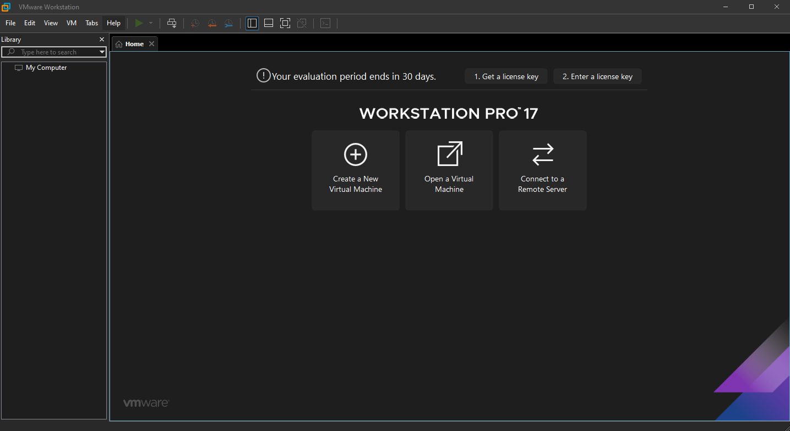
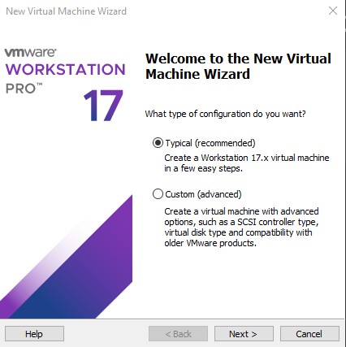
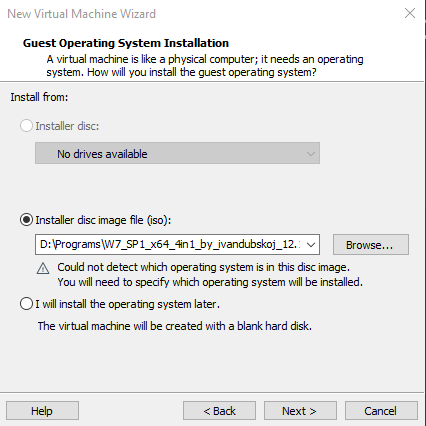
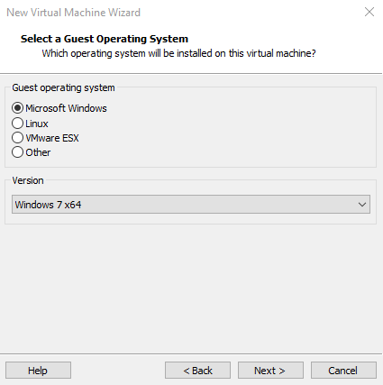
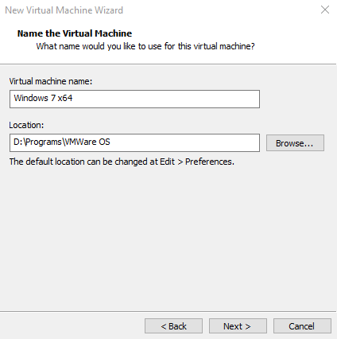
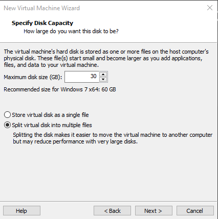
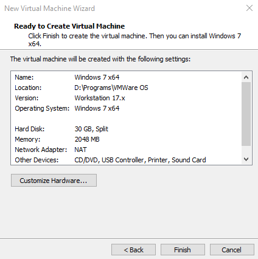
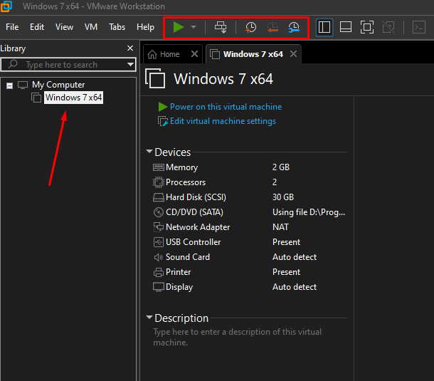
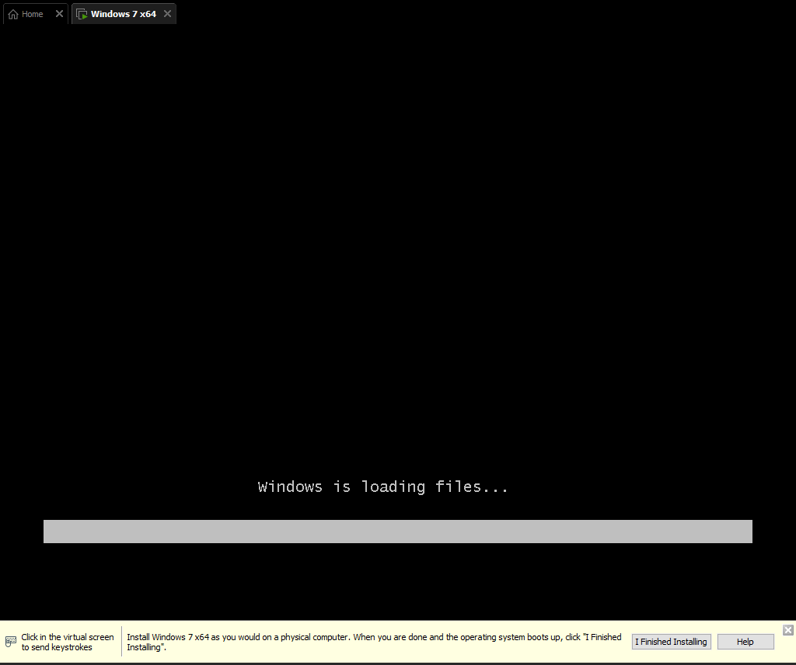

VMWare Workstation – программное обеспечение, предназначенное для виртуализации операционных систем и работы в них. Данная программа поддерживается Windows и Linux. Приложение было разработано и продаётся компанией VMWare.
Инсталляция не представляет собой ничего сложного – скачайте программу и запустите установщик. Следуйте простым инструкциям и дождитесь завершения процесса. После установки приложения вы увидите следующее окно:

Рисунок 6.2.1 – главное окно приложения VMWare Workstation.
Сразу же имеются 3 большие кнопки, выполняющие основной функционал по созданию, открытию виртуальных машин, а также подключения к удалённому серверу. Функционал продублирован на верхней панели во вкладках «File» и «Edit».
Создадим виртуальную машину, нажав на кнопку «Create a New Virtual Machine». Откроется следующее окно:

Рисунок 6.2.2 – окно создания виртуальной машины.
Жмём кнопку «Next» и переходим к следующему шагу, где попросят указать ISO-образ или же отказаться и указать потом.

Рисунок 6.2.3 – окно указания операционной системы.
На следующем этапе требуется показать операционную систему и её версию.

Рисунок 6.2.4 – окно указания операционной системы и её версии.
Важно отметить, что размер файла уменьшился почти в 5 раз, что существенно экономит память компьютера.
Через кнопку тестировать можно просмотреть результат о сжатие файла, можно увидеть исходный размер файла, сжатый, сколько файлов сжималось и сколько архивов получилось, а также отчёт об ошибках.
Кнопки «Копировать», «Переместить», «Удалить» и «Информация» аналогичны функционалу «Копировать», «Вырезать», «Удалить» и «Свойства», встроенных в Windows возможностей.
Рассмотрим функционал кнопки «Извлечь». После нажатия на неё появится следующее меню.

Рисунок 6.2.5 – окно указания имени и расположения ВМ.
Следующий шаг – создание виртуального жёсткого диска. После указания размера жмём кнопку «Next».

Рисунок 6.2.6 – окно создания виртуального жёсткого диска.
После этого идёт завершающее окно по созданию виртуальной машины, а также имеется кнопка, где предлагается настроить ресурсы для виртуальной машины. Это можно сделать при помощи кнопки «Customize Hardware».

Рисунок 6.2.7 – окно завершения создания виртуальной машины.
В результате завершения настройки виртуальная машина появится слева в меню, а также активируются кнопки.

Рисунок 6.2.8 – результат создания виртуальной машины.
Далее мы можем запустить виртуальную машину и пойдёт установка соответсвующей операционной системы.

Рисунок 6.2.9 – запуск виртуальной машины и установка ОС.
В подведении итогов, хочу отметить, что VMWare Workstation – хорошая программа для виртуализации, которая поддерживает множество операционных систем, но имеет минус, что является платной по сравнению с VirtualBox.